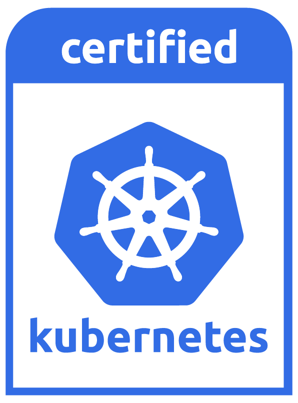

Creating a single master cluster with kubeadm
kubeadm helps you bootstrap a minimum viable Kubernetes cluster that conforms to best practices. With kubeadm, your cluster should pass Kubernetes Conformance tests. Kubeadm also supports other cluster lifecycle functions, such as upgrades, downgrade, and managing bootstrap tokens.
Because you can install kubeadm on various types of machine (e.g. laptop, server, Raspberry Pi, etc.), it’s well suited for integration with provisioning systems such as Terraform or Ansible.
kubeadm’s simplicity means it can serve a wide range of use cases:
- New users can start with kubeadm to try Kubernetes out for the first time.
- Users familiar with Kubernetes can spin up clusters with kubeadm and test their applications.
- Larger projects can include kubeadm as a building block in a more complex system that can also include other installer tools.
kubeadm is designed to be a simple way for new users to start trying Kubernetes out, possibly for the first time, a way for existing users to test their application on and stitch together a cluster easily, and also to be a building block in other ecosystem and/or installer tool with a larger scope.
You can install kubeadm very easily on operating systems that support installing deb or rpm packages. The responsible SIG for kubeadm, SIG Cluster Lifecycle, provides these packages pre-built for you, but you may also build them from source for other OSes.
kubeadm Maturity
| Area | Maturity Level |
|---|---|
| Command line UX | GA |
| Implementation | GA |
| Config file API | beta |
| CoreDNS | GA |
| kubeadm alpha subcommands | alpha |
| High availability | alpha |
| DynamicKubeletConfig | alpha |
| Self-hosting | alpha |
kubeadm’s overall feature state is GA. Some sub-features, like the configuration
file API are still under active development. The implementation of creating the cluster
may change slightly as the tool evolves, but the overall implementation should be pretty stable.
Any commands under kubeadm alpha are by definition, supported on an alpha level.
Support timeframes
Kubernetes releases are generally supported for nine months, and during that
period a patch release may be issued from the release branch if a severe bug or
security issue is found. Here are the latest Kubernetes releases and the support
timeframe; which also applies to kubeadm.
| Kubernetes version | Release month | End-of-life-month |
|---|---|---|
| v1.6.x | March 2017 | December 2017 |
| v1.7.x | June 2017 | March 2018 |
| v1.8.x | September 2017 | June 2018 |
| v1.9.x | December 2017 | September 2018 |
| v1.10.x | March 2018 | December 2018 |
| v1.11.x | June 2018 | March 2019 |
| v1.12.x | September 2018 | June 2019 |
| v1.13.x | December 2018 | September 2019 |
- Before you begin
- Objectives
- Instructions
- Tear down
- Maintaining a cluster
- Explore other add-ons
- What’s next
- Feedback
- Version skew policy
- kubeadm works on multiple platforms
- Limitations
- Troubleshooting
Before you begin
- One or more machines running a deb/rpm-compatible OS, for example Ubuntu or CentOS
- 2 GB or more of RAM per machine. Any less leaves little room for your apps.
- 2 CPUs or more on the master
- Full network connectivity among all machines in the cluster. A public or private network is fine.
Objectives
- Install a single master Kubernetes cluster or high availability cluster
- Install a Pod network on the cluster so that your Pods can talk to each other
Instructions
Installing kubeadm on your hosts
See “Installing kubeadm”.
Note:If you have already installed kubeadm, run
apt-get update && apt-get upgradeoryum updateto get the latest version of kubeadm.When you upgrade, the kubelet restarts every few seconds as it waits in a crashloop for kubeadm to tell it what to do. This crashloop is expected and normal. After you initialize your master, the kubelet runs normally.
Initializing your master
The master is the machine where the control plane components run, including etcd (the cluster database) and the API server (which the kubectl CLI communicates with).
- Choose a pod network add-on, and verify whether it requires any arguments to
be passed to kubeadm initialization. Depending on which
third-party provider you choose, you might need to set the
--pod-network-cidrto a provider-specific value. See Installing a pod network add-on. - (Optional) Since version 1.14, kubeadm will try to detect the container runtime on Linux
by using a list of well known domain socket paths. To use different container runtime or
if there are more than one installed on the provisioned node, specify the
--cri-socketargument tokubeadm init. See Installing runtime. - (Optional) Unless otherwise specified, kubeadm uses the network interface associated
with the default gateway to advertise the master’s IP. To use a different
network interface, specify the
--apiserver-advertise-address=<ip-address>argument tokubeadm init. To deploy an IPv6 Kubernetes cluster using IPv6 addressing, you must specify an IPv6 address, for example--apiserver-advertise-address=fd00::101 - (Optional) Run
kubeadm config images pullprior tokubeadm initto verify connectivity to gcr.io registries.
Now run:
kubeadm init <args> More information
For more information about kubeadm init arguments, see the kubeadm reference guide.
For a complete list of configuration options, see the configuration file documentation.
To customize control plane components, including optional IPv6 assignment to liveness probe for control plane components and etcd server, provide extra arguments to each component as documented in custom arguments.
To run kubeadm init again, you must first tear down the cluster.
If you join a node with a different architecture to your cluster, create a separate
Deployment or DaemonSet for kube-proxy and kube-dns on the node. This is because the Docker images for these
components do not currently support multi-architecture.
kubeadm init first runs a series of prechecks to ensure that the machine
is ready to run Kubernetes. These prechecks expose warnings and exit on errors. kubeadm init
then downloads and installs the cluster control plane components. This may take several minutes.
The output should look like:
[init] Using Kubernetes version: vX.Y.Z
[preflight] Running pre-flight checks
[preflight] Pulling images required for setting up a Kubernetes cluster
[preflight] This might take a minute or two, depending on the speed of your internet connection
[preflight] You can also perform this action in beforehand using 'kubeadm config images pull'
[kubelet-start] Writing kubelet environment file with flags to file "/var/lib/kubelet/kubeadm-flags.env"
[kubelet-start] Writing kubelet configuration to file "/var/lib/kubelet/config.yaml"
[kubelet-start] Activating the kubelet service
[certs] Using certificateDir folder "/etc/kubernetes/pki"
[certs] Generating "etcd/ca" certificate and key
[certs] Generating "etcd/server" certificate and key
[certs] etcd/server serving cert is signed for DNS names [kubeadm-master localhost] and IPs [10.138.0.4 127.0.0.1 ::1]
[certs] Generating "etcd/healthcheck-client" certificate and key
[certs] Generating "etcd/peer" certificate and key
[certs] etcd/peer serving cert is signed for DNS names [kubeadm-master localhost] and IPs [10.138.0.4 127.0.0.1 ::1]
[certs] Generating "apiserver-etcd-client" certificate and key
[certs] Generating "ca" certificate and key
[certs] Generating "apiserver" certificate and key
[certs] apiserver serving cert is signed for DNS names [kubeadm-master kubernetes kubernetes.default kubernetes.default.svc kubernetes.default.svc.cluster.local] and IPs [10.96.0.1 10.138.0.4]
[certs] Generating "apiserver-kubelet-client" certificate and key
[certs] Generating "front-proxy-ca" certificate and key
[certs] Generating "front-proxy-client" certificate and key
[certs] Generating "sa" key and public key
[kubeconfig] Using kubeconfig folder "/etc/kubernetes"
[kubeconfig] Writing "admin.conf" kubeconfig file
[kubeconfig] Writing "kubelet.conf" kubeconfig file
[kubeconfig] Writing "controller-manager.conf" kubeconfig file
[kubeconfig] Writing "scheduler.conf" kubeconfig file
[control-plane] Using manifest folder "/etc/kubernetes/manifests"
[control-plane] Creating static Pod manifest for "kube-apiserver"
[control-plane] Creating static Pod manifest for "kube-controller-manager"
[control-plane] Creating static Pod manifest for "kube-scheduler"
[etcd] Creating static Pod manifest for local etcd in "/etc/kubernetes/manifests"
[wait-control-plane] Waiting for the kubelet to boot up the control plane as static Pods from directory "/etc/kubernetes/manifests". This can take up to 4m0s
[apiclient] All control plane components are healthy after 31.501735 seconds
[uploadconfig] storing the configuration used in ConfigMap "kubeadm-config" in the "kube-system" Namespace
[kubelet] Creating a ConfigMap "kubelet-config-X.Y" in namespace kube-system with the configuration for the kubelets in the cluster
[patchnode] Uploading the CRI Socket information "/var/run/dockershim.sock" to the Node API object "kubeadm-master" as an annotation
[mark-control-plane] Marking the node kubeadm-master as control-plane by adding the label "node-role.kubernetes.io/master=''"
[mark-control-plane] Marking the node kubeadm-master as control-plane by adding the taints [node-role.kubernetes.io/master:NoSchedule]
[bootstrap-token] Using token: <token>
[bootstrap-token] Configuring bootstrap tokens, cluster-info ConfigMap, RBAC Roles
[bootstraptoken] configured RBAC rules to allow Node Bootstrap tokens to post CSRs in order for nodes to get long term certificate credentials
[bootstraptoken] configured RBAC rules to allow the csrapprover controller automatically approve CSRs from a Node Bootstrap Token
[bootstraptoken] configured RBAC rules to allow certificate rotation for all node client certificates in the cluster
[bootstraptoken] creating the "cluster-info" ConfigMap in the "kube-public" namespace
[addons] Applied essential addon: CoreDNS
[addons] Applied essential addon: kube-proxy
Your Kubernetes master has initialized successfully!
To start using your cluster, you need to run the following as a regular user:
mkdir -p $HOME/.kube
sudo cp -i /etc/kubernetes/admin.conf $HOME/.kube/config
sudo chown $(id -u):$(id -g) $HOME/.kube/config
You should now deploy a pod network to the cluster.
Run "kubectl apply -f [podnetwork].yaml" with one of the options listed at:
/docs/concepts/cluster-administration/addons/
You can now join any number of machines by running the following on each node
as root:
kubeadm join <master-ip>:<master-port> --token <token> --discovery-token-ca-cert-hash sha256:<hash>To make kubectl work for your non-root user, run these commands, which are
also part of the kubeadm init output:
mkdir -p $HOME/.kube
sudo cp -i /etc/kubernetes/admin.conf $HOME/.kube/config
sudo chown $(id -u):$(id -g) $HOME/.kube/configAlternatively, if you are the root user, you can run:
export KUBECONFIG=/etc/kubernetes/admin.confMake a record of the kubeadm join command that kubeadm init outputs. You
need this command to join nodes to your cluster.
The token is used for mutual authentication between the master and the joining
nodes. The token included here is secret. Keep it safe, because anyone with this
token can add authenticated nodes to your cluster. These tokens can be listed,
created, and deleted with the kubeadm token command. See the
kubeadm reference guide.
Installing a pod network add-on
Caution: This section contains important information about installation and deployment order. Read it carefully before proceeding.
You must install a pod network add-on so that your pods can communicate with each other.
The network must be deployed before any applications. Also, CoreDNS will not start up before a network is installed. kubeadm only supports Container Network Interface (CNI) based networks (and does not support kubenet).
Several projects provide Kubernetes pod networks using CNI, some of which also support Network Policy. See the add-ons page for a complete list of available network add-ons. - IPv6 support was added in CNI v0.6.0. - CNI bridge and local-ipam are the only supported IPv6 network plugins in Kubernetes version 1.9.
Note that kubeadm sets up a more secure cluster by default and enforces use of RBAC. Make sure that your network manifest supports RBAC.
Also, beware, that your Pod network must not overlap with any of the host networks as this can cause issues.
If you find a collision between your network plugin’s preferred Pod network and some of your host networks, you should think of a suitable CIDR replacement and use that during kubeadm init with --pod-network-cidr and as a replacement in your network plugin’s YAML.
You can install a pod network add-on with the following command:
kubectl apply -f <add-on.yaml>You can install only one pod network per cluster.
Once a pod network has been installed, you can confirm that it is working by
checking that the CoreDNS pod is Running in the output of kubectl get pods --all-namespaces.
And once the CoreDNS pod is up and running, you can continue by joining your nodes.
If your network is not working or CoreDNS is not in the Running state, check out our troubleshooting docs.
Control plane node isolation
By default, your cluster will not schedule pods on the master for security reasons. If you want to be able to schedule pods on the master, e.g. for a single-machine Kubernetes cluster for development, run:
kubectl taint nodes --all node-role.kubernetes.io/master-With output looking something like:
node "test-01" untainted
taint "node-role.kubernetes.io/master:" not found
taint "node-role.kubernetes.io/master:" not found
This will remove the node-role.kubernetes.io/master taint from any nodes that
have it, including the master node, meaning that the scheduler will then be able
to schedule pods everywhere.
Joining your nodes
The nodes are where your workloads (containers and pods, etc) run. To add new nodes to your cluster do the following for each machine:
- SSH to the machine
- Become root (e.g.
sudo su -) - Run the command that was output by
kubeadm init. For example:
kubeadm join --token <token> <master-ip>:<master-port> --discovery-token-ca-cert-hash sha256:<hash>If you do not have the token, you can get it by running the following command on the master node:
kubeadm token listThe output is similar to this:
TOKEN TTL EXPIRES USAGES DESCRIPTION EXTRA GROUPS
8ewj1p.9r9hcjoqgajrj4gi 23h 2018-06-12T02:51:28Z authentication, The default bootstrap system:
signing token generated by bootstrappers:
'kubeadm init'. kubeadm:
default-node-tokenBy default, tokens expire after 24 hours. If you are joining a node to the cluster after the current token has expired, you can create a new token by running the following command on the master node:
kubeadm token createThe output is similar to this:
5didvk.d09sbcov8ph2amjwIf you don’t have the value of --discovery-token-ca-cert-hash, you can get it by running the following command chain on the master node:
openssl x509 -pubkey -in /etc/kubernetes/pki/ca.crt | openssl rsa -pubin -outform der 2>/dev/null | \
openssl dgst -sha256 -hex | sed 's/^.* //'The output is similar to this:
8cb2de97839780a412b93877f8507ad6c94f73add17d5d7058e91741c9d5ec78Note: To specify an IPv6 tuple for<master-ip>:<master-port>, IPv6 address must be enclosed in square brackets, for example:[fd00::101]:2073.
The output should look something like:
[preflight] Running pre-flight checks
... (log output of join workflow) ...
Node join complete:
* Certificate signing request sent to master and response
received.
* Kubelet informed of new secure connection details.
Run 'kubectl get nodes' on the master to see this machine join.
A few seconds later, you should notice this node in the output from kubectl get
nodes when run on the master.
(Optional) Controlling your cluster from machines other than the master
In order to get a kubectl on some other computer (e.g. laptop) to talk to your cluster, you need to copy the administrator kubeconfig file from your master to your workstation like this:
scp root@<master ip>:/etc/kubernetes/admin.conf .
kubectl --kubeconfig ./admin.conf get nodesNote:The example above assumes SSH access is enabled for root. If that is not the case, you can copy the
admin.conffile to be accessible by some other user andscpusing that other user instead.The
admin.conffile gives the user superuser privileges over the cluster. This file should be used sparingly. For normal users, it’s recommended to generate an unique credential to which you whitelist privileges. You can do this with thekubeadm alpha kubeconfig user --client-name <CN>command. That command will print out a KubeConfig file to STDOUT which you should save to a file and distribute to your user. After that, whitelist privileges by usingkubectl create (cluster)rolebinding.
(Optional) Proxying API Server to localhost
If you want to connect to the API Server from outside the cluster you can use
kubectl proxy:
scp root@<master ip>:/etc/kubernetes/admin.conf .
kubectl --kubeconfig ./admin.conf proxyYou can now access the API Server locally at http://localhost:8001/api/v1
Tear down
To undo what kubeadm did, you should first drain the node and make sure that the node is empty before shutting it down.
Talking to the master with the appropriate credentials, run:
kubectl drain <node name> --delete-local-data --force --ignore-daemonsets
kubectl delete node <node name>Then, on the node being removed, reset all kubeadm installed state:
kubeadm resetThe reset process does not reset or clean up iptables rules or IPVS tables. If you wish to reset iptables, you must do so manually:
iptables -F && iptables -t nat -F && iptables -t mangle -F && iptables -XIf you want to reset the IPVS tables, you must run the following command:
ipvsadm -CIf you wish to start over simply run kubeadm init or kubeadm join with the
appropriate arguments.
More options and information about the
kubeadm reset command.
Maintaining a cluster
Instructions for maintaining kubeadm clusters (e.g. upgrades,downgrades, etc.) can be found here.
Explore other add-ons
See the list of add-ons to explore other add-ons, including tools for logging, monitoring, network policy, visualization & control of your Kubernetes cluster.
What’s next
- Verify that your cluster is running properly with Sonobuoy
- Learn about kubeadm’s advanced usage in the kubeadm reference documentation
- Learn more about Kubernetes concepts and
kubectl. - Configure log rotation. You can use logrotate for that. When using Docker, you can specify log rotation options for Docker daemon, for example
--log-driver=json-file --log-opt=max-size=10m --log-opt=max-file=5. See Configure and troubleshoot the Docker daemon for more details.
Feedback
- For bugs, visit kubeadm Github issue tracker
- For support, visit kubeadm Slack Channel: #kubeadm
- General SIG Cluster Lifecycle Development Slack Channel: #sig-cluster-lifecycle
- SIG Cluster Lifecycle SIG information
- SIG Cluster Lifecycle Mailing List: kubernetes-sig-cluster-lifecycle
Version skew policy
The kubeadm CLI tool of version vX.Y may deploy clusters with a control plane of version vX.Y or vX.(Y-1). kubeadm CLI vX.Y can also upgrade an existing kubeadm-created cluster of version vX.(Y-1).
Due to that we can’t see into the future, kubeadm CLI vX.Y may or may not be able to deploy vX.(Y+1) clusters.
Example: kubeadm v1.8 can deploy both v1.7 and v1.8 clusters and upgrade v1.7 kubeadm-created clusters to v1.8.
These resources provide more information on supported version skew between kubelets and the control plane, and other Kubernetes components:
- Kubernetes version and version-skew policy
- Kubeadm-specific installation guide
kubeadm works on multiple platforms
kubeadm deb/rpm packages and binaries are built for amd64, arm (32-bit), arm64, ppc64le, and s390x following the multi-platform proposal.
Multiplatform container images for the control plane and addons are also supported since v1.12.
Only some of the network providers offer solutions for all platforms. Please consult the list of network providers above or the documentation from each provider to figure out whether the provider supports your chosen platform.
Limitations
Please note: kubeadm is a work in progress and these limitations will be addressed in due course.
- The cluster created here has a single master, with a single etcd database running on it. This means that if the master fails, your cluster may lose data and may need to be recreated from scratch. Adding HA support (multiple etcd servers, multiple API servers, etc) to kubeadm is still a work-in-progress.
Workaround: regularly
back up etcd. The
etcd data directory configured by kubeadm is at /var/lib/etcd on the master.
Troubleshooting
If you are running into difficulties with kubeadm, please consult our troubleshooting docs.
Feedback
Was this page helpful?
Thanks for the feedback. If you have a specific, answerable question about how to use Kubernetes, ask it on Stack Overflow. Open an issue in the GitHub repo if you want to report a problem or suggest an improvement.